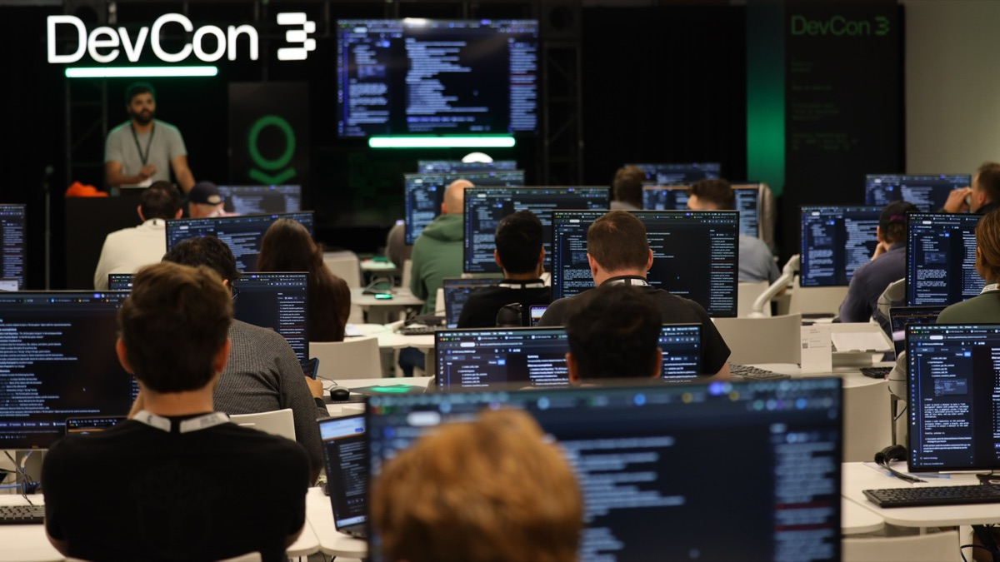

DevCon3
Palantir’s Flagship Developer Conference
Product Launches
Announced at DevCon3
Autopilot
Maximizing automation requires a shared workbench for humans and AI. In this Product Launch at DevCon 3, Palantir Software Engineers Christopher Jeganathan and Anik Roy unveil and demo Autopilot — a development environment for managing, observing, and optimizing automation.

AI FDE
“Our design philosophy is to make it so that any clicks that humans do in the UI could be things that you can have an AI FDE do for you.” At DevCon 3, watch as Palantir Software Engineer Ankit Shankar unveils the AI Forward Deployed Engineer — an agentic system that can build data transformations, create and edit your ontology, create functions, build entire applications, and much more.

AIP Deployment at Scale
After going zero to one, how do you confidently scale your ambition? In this DevCon 3 demo, Palantir Group Lead Xinyi Wang and Software Engineer Raj Krishnan showcase how AIP empowers builders to continuously update and release their AI products, without disrupting users or compromising the stability of production workflows.

Code in Production
Ambitious AIP Workflows and Use Cases in Production Today
Lennar x MCP
“Being able to automate those mundane and tedious tasks — those things that as a developer just make your life annoying — that's what we're able to do here. So you can get back to what you like to do most.” At DevCon 3, Lennar Manager of Data & Analytics Michael Seman and Palantir Software Engineer Ramzi Karam showed the power of integrating MCP with Foundry and AIP, and enabling end-to-end automation for developers.

Gallatin x Observability
“There's a lot of reasons why we use Foundry. For us... it's the speed.” At DevCon 3, Daniel Buchmueller, CTO and Co-Founder of Gallatin, and Palantir Software Engineer Bennett Norman use an operational application to demonstrate the new end-to-end observability features in Foundry and AIP.

HCA x Deploying AI in Healthcare at Scale
“We were generating schedules for our nurse leaders... and spending 15 hours on it. We've got that process down to two hours.” In this DevCon 3 demo, HCA Healthcare’s AVP Product Owner Ben Spears and Director Colton Langianese describes how Foundry is now powering scheduling and staffing.